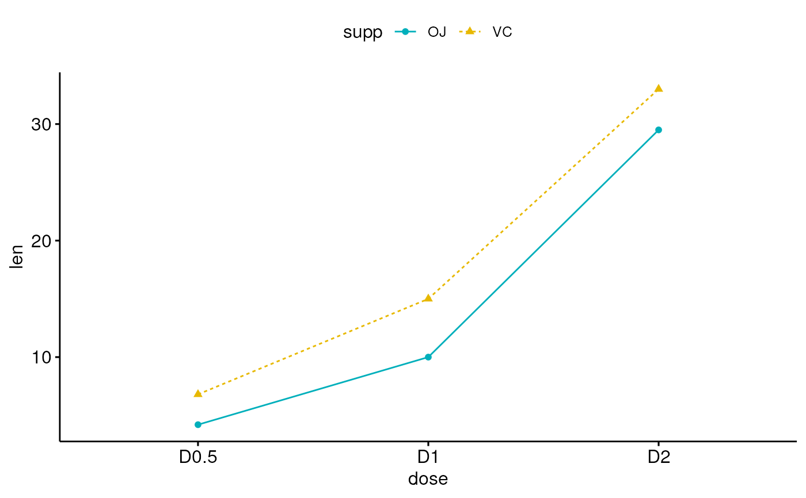
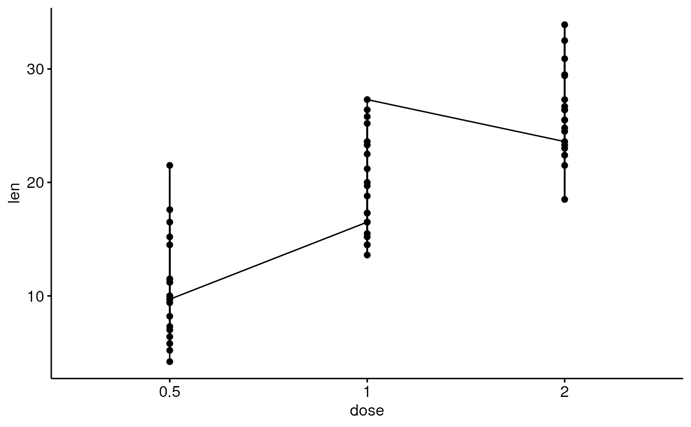
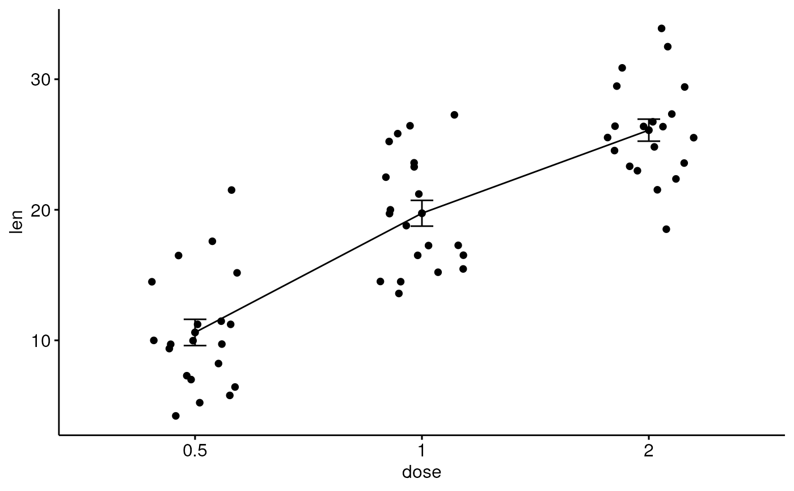
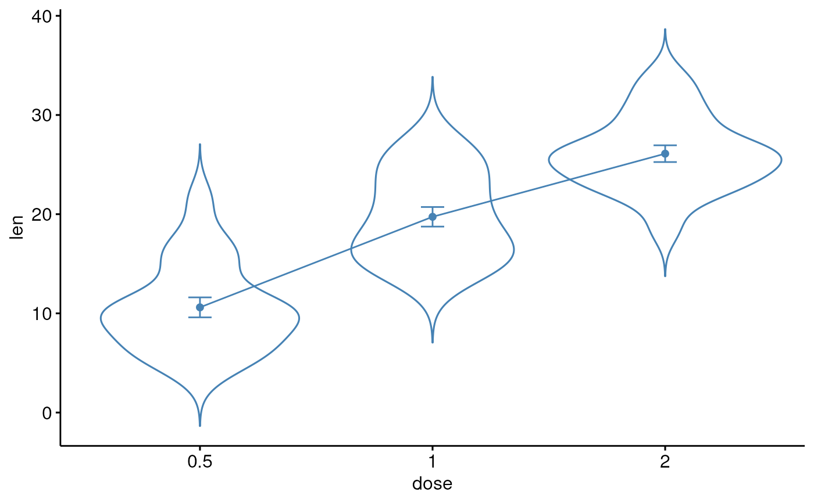
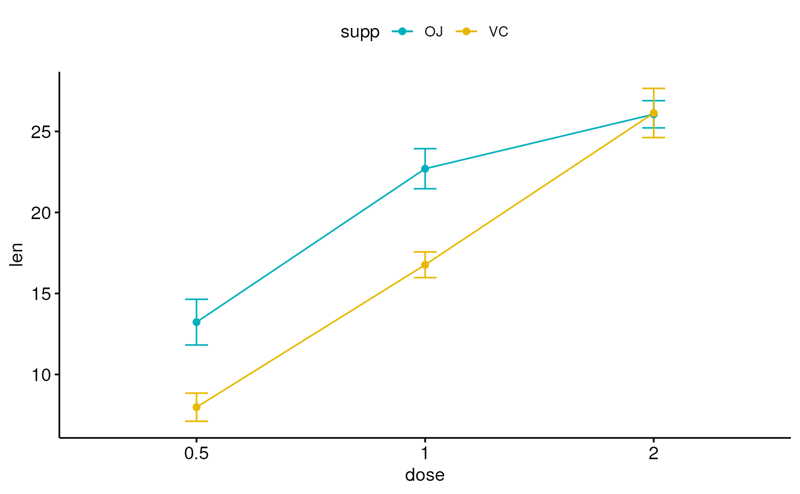
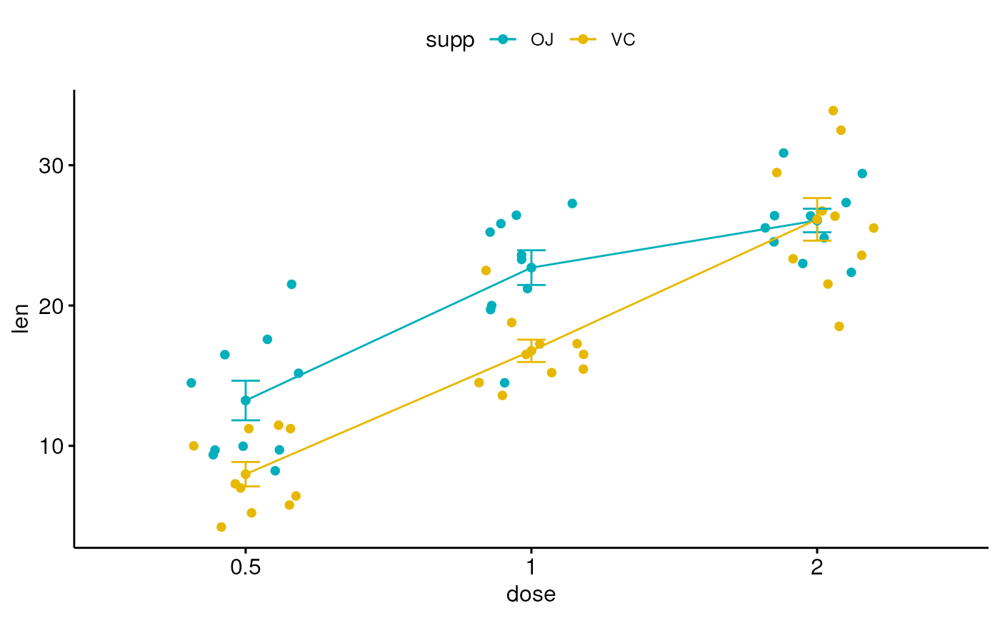
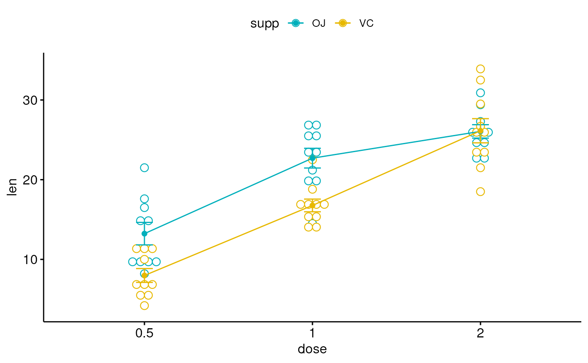

Create a line plot.
ggline(
data,
x,
y,
group = 1,
numeric.x.axis = FALSE,
combine = FALSE,
merge = FALSE,
color = "black",
palette = NULL,
linetype = "solid",
plot_type = c("b", "l", "p"),
size = NULL,
linewidth = NULL,
shape = 19,
stroke = NULL,
point.size = linewidth,
point.color = color,
title = NULL,
xlab = NULL,
ylab = NULL,
facet.by = NULL,
panel.labs = NULL,
short.panel.labs = TRUE,
select = NULL,
remove = NULL,
order = NULL,
add = "none",
add.params = list(),
error.plot = "errorbar",
label = NULL,
font.label = list(size = 11, color = "black"),
label.select = NULL,
repel = FALSE,
label.rectangle = FALSE,
show.line.label = FALSE,
position = "identity",
ggtheme = theme_pubr(),
...
)a data frame
x and y variables for drawing.
grouping variable to connect points by line. Allowed values are 1 (for one line, one group) or a character vector specifying the name of the grouping variable (case of multiple lines).
logical. If TRUE, x axis will be treated as numeric. Default is FALSE.
logical value. Default is FALSE. Used only when y is a vector containing multiple variables to plot. If TRUE, create a multi-panel plot by combining the plot of y variables.
logical or character value. Default is FALSE. Used only when y is a vector containing multiple variables to plot. If TRUE, merge multiple y variables in the same plotting area. Allowed values include also "asis" (TRUE) and "flip". If merge = "flip", then y variables are used as x tick labels and the x variable is used as grouping variable.
line colors.
the color palette to be used for coloring or filling by groups. Allowed values include "grey" for grey color palettes; brewer palettes e.g. "RdBu", "Blues", ...; or custom color palette e.g. c("blue", "red"); and scientific journal palettes from ggsci R package, e.g.: "npg", "aaas", "lancet", "jco", "ucscgb", "uchicago", "simpsons" and "rickandmorty".
line type.
plot type. Allowed values are one of "b" for both line and point; "l" for line only; and "p" for point only. Default is "b".
line size. Deprecated in ggplot2 v >= 3.4.0, use linewidth instead.
line width. Default is 0.5. Recommended parameter for
ggplot2 version >= 3.4.0. If both size and linewidth are specified, an error is thrown.
point shapes.
point stroke. Used only for shapes 21-24 to control the thickness of points border.
point size.
point color.
plot main title.
character vector specifying x axis labels. Use xlab = FALSE to hide xlab.
character vector specifying y axis labels. Use ylab = FALSE to hide ylab.
character vector, of length 1 or 2, specifying grouping variables for faceting the plot into multiple panels. Should be in the data.
a list of one or two character vectors to modify facet panel labels. For example, panel.labs = list(sex = c("Male", "Female")) specifies the labels for the "sex" variable. For two grouping variables, you can use for example panel.labs = list(sex = c("Male", "Female"), rx = c("Obs", "Lev", "Lev2") ).
logical value. Default is TRUE. If TRUE, create short labels for panels by omitting variable names; in other words panels will be labelled only by variable grouping levels.
character vector specifying which items to display.
character vector specifying which items to remove from the plot.
character vector specifying the order of items.
character vector for adding another plot element (e.g.: dot plot or error bars). Allowed values are one or the combination of: "none", "dotplot", "jitter", "boxplot", "point", "mean", "mean_se", "mean_sd", "mean_ci", "mean_range", "median", "median_iqr", "median_hilow", "median_q1q3", "median_mad", "median_range"; see ?desc_statby for more details.
parameters (color, shape, size, fill, linetype) for the argument 'add'; e.g.: add.params = list(color = "red").
plot type used to visualize error. Allowed values are one of c("pointrange", "linerange", "crossbar", "errorbar", "upper_errorbar", "lower_errorbar", "upper_pointrange", "lower_pointrange", "upper_linerange", "lower_linerange"). Default value is "pointrange" or "errorbar". Used only when add != "none" and add contains one "mean_*" or "med_*" where "*" = sd, se, ....
the name of the column containing point labels. Can be also a character vector with length = nrow(data).
a list which can contain the combination of the following elements: the size (e.g.: 14), the style (e.g.: "plain", "bold", "italic", "bold.italic") and the color (e.g.: "red") of labels. For example font.label = list(size = 14, face = "bold", color ="red"). To specify only the size and the style, use font.label = list(size = 14, face = "plain").
can be of two formats:
a character vector specifying some labels to show.
a list containing one or the combination of the following components:
top.up and
top.down: to display the labels of the top up/down points. For
example, label.select = list(top.up = 10, top.down = 4).
criteria: to filter, for example, by x and y variabes values, use
this: label.select = list(criteria = "`y` > 2 & `y` < 5 & `x` %in%
c('A', 'B')").
a logical value, whether to use ggrepel to avoid overplotting text labels or not.
logical value. If TRUE, add rectangle underneath the text, making it easier to read.
logical value. If TRUE, shows line labels.
A position adjustment to use on the data for this layer. This
can be used in various ways, including to prevent overplotting and
improving the display. The position argument accepts the following:
The result of calling a position function, such as position_jitter().
This method allows for passing extra arguments to the position.
A string naming the position adjustment. To give the position as a
string, strip the function name of the position_ prefix. For example,
to use position_jitter(), give the position as "jitter".
For more information and other ways to specify the position, see the layer position documentation.
function, ggplot2 theme name. Default value is theme_pubr(). Allowed values include ggplot2 official themes: theme_gray(), theme_bw(), theme_minimal(), theme_classic(), theme_void(), ....
other arguments to be passed to geom_dotplot.
The plot can be easily customized using the function ggpar(). Read ?ggpar for changing:
main title and axis labels: main, xlab, ylab
axis limits: xlim, ylim (e.g.: ylim = c(0, 30))
axis scales: xscale, yscale (e.g.: yscale = "log2")
color palettes: palette = "Dark2" or palette = c("gray", "blue", "red")
legend title, labels and position: legend = "right"
plot orientation : orientation = c("vertical", "horizontal", "reverse")
# Data
df <- data.frame(dose=c("D0.5", "D1", "D2"),
len=c(4.2, 10, 29.5))
print(df)
#> dose len
#> 1 D0.5 4.2
#> 2 D1 10.0
#> 3 D2 29.5
# Basic plot
# +++++++++++++++++++++++++++
ggline(df, x = "dose", y = "len")
# Plot with multiple groups
# +++++++++++++++++++++
# Create some data
df2 <- data.frame(supp=rep(c("VC", "OJ"), each=3),
dose=rep(c("D0.5", "D1", "D2"),2),
len=c(6.8, 15, 33, 4.2, 10, 29.5))
print(df2)
#> supp dose len
#> 1 VC D0.5 6.8
#> 2 VC D1 15.0
#> 3 VC D2 33.0
#> 4 OJ D0.5 4.2
#> 5 OJ D1 10.0
#> 6 OJ D2 29.5
# Plot "len" by "dose" and
# Change line types and point shapes by a second groups: "supp"
ggline(df2, "dose", "len",
linetype = "supp", shape = "supp")
# Change colors
# +++++++++++++++++++++
# Change color by group: "supp"
# Use custom color palette
ggline(df2, "dose", "len",
linetype = "supp", shape = "supp",
color = "supp", palette = c("#00AFBB", "#E7B800"))

# Add points and errors
# ++++++++++++++++++++++++++
# Data: ToothGrowth data set we'll be used.
df3 <- ToothGrowth
head(df3, 10)
#> len supp dose
#> 1 4.2 VC 0.5
#> 2 11.5 VC 0.5
#> 3 7.3 VC 0.5
#> 4 5.8 VC 0.5
#> 5 6.4 VC 0.5
#> 6 10.0 VC 0.5
#> 7 11.2 VC 0.5
#> 8 11.2 VC 0.5
#> 9 5.2 VC 0.5
#> 10 7.0 VC 0.5
# It can be seen that for each group we have
# different values
ggline(df3, x = "dose", y = "len")

# Visualize the mean of each group
ggline(df3, x = "dose", y = "len",
add = "mean")
# Add error bars: mean_se
# (other values include: mean_sd, mean_ci, median_iqr, ....)
# Add labels
ggline(df3, x = "dose", y = "len", add = "mean_se")
# Change error.plot to "pointrange"
ggline(df3, x = "dose", y = "len",
add = "mean_se", error.plot = "pointrange")
# Add jitter points and errors (mean_se)
ggline(df3, x = "dose", y = "len",
add = c("mean_se", "jitter"))

# Add dot and errors (mean_se)
ggline(df3, x = "dose", y = "len",
add = c("mean_se", "dotplot"), color = "steelblue")
#> Bin width defaults to 1/30 of the range of the data. Pick better value with
#> `binwidth`.
# Add violin and errors (mean_se)
ggline(df3, x = "dose", y = "len",
add = c("mean_se", "violin"), color = "steelblue")

# Multiple groups with error bars
# ++++++++++++++++++++++
ggline(df3, x = "dose", y = "len", color = "supp",
add = "mean_se", palette = c("#00AFBB", "#E7B800"))

# Add jitter
ggline(df3, x = "dose", y = "len", color = "supp",
add = c("mean_se", "jitter"), palette = c("#00AFBB", "#E7B800"))

# Add dot plot
ggline(df3, x = "dose", y = "len", color = "supp",
add = c("mean_se", "dotplot"), palette = c("#00AFBB", "#E7B800"))
#> Bin width defaults to 1/30 of the range of the data. Pick better value with
#> `binwidth`.
